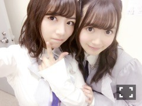
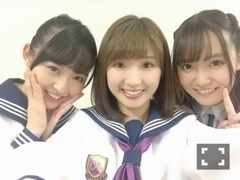
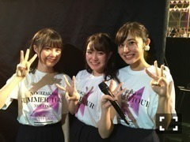
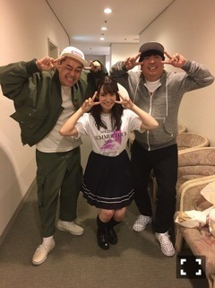
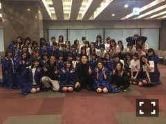

| 2017/11 10 Fri | 中元日芽香 ひめたん-0o0-その728 |





最後の個別握手会、
最後のライブ、終わりました。
ありがとうございました！！
握手会は遅い時間まで
沢山の方が残って下さって
卒業セレモニーを開催して頂きました～
受験や転職や入院、大変な時も
ひめたんに元気をもらってました！って
沢山言っていただけて
色んな方の人生の一部に
私が刻まれているんだと思いました
アイドルって凄いお仕事なんですね。
私のために涙を流して下さる方が
こんなにもいるんだということが
不思議なような幸せなような。
握手会で一番言われたのが
「幸せになってね。」
もちろんこれからも幸せ探しますが
アイドルでいられることが
私は何より幸せでしたよ(^0^)
東京ドーム2days。
みんなの夢が叶ったことが嬉しいし
その瞬間を共有できたことが嬉しい。
君は僕と会わない方が良かったのかな
アンダー
設定温度
乃木坂の詩
きっかけ
どれも大切な曲です。
ドームで歌えて本当に良かった。
46人で歌うのは神宮が最後だろうと
勝手に思っていました。
7/2に私の夏は終わったと。
でももう一度みんなで歌えて良かった。
色んな人に迷惑を掛けてしまいましたが
出演できて良かったです！
今まで言ったことなかったですが
君僕での一面のピンク色、
本当に綺麗でした。
背中を押された気がします。
絶景でした。目に焼き付けましたよ。
ずっと愛され続ける楽曲になってほしい、、
人に愛されて成り立つお仕事、アイドル。
素敵だなと思いました。
アンダーの歌詞へのアンサーとして
誰になんと言われようと
「私の人生はここにあったな」と。
蓮加ちゃんのブログにあった
ミートボールの件（笑）、
11/19深夜オンエアの
乃木坂工事中で
スッキリすると思います！！！
最後にもう一度工事中に
出演できて良かったです！
(＊´・ω・＊)